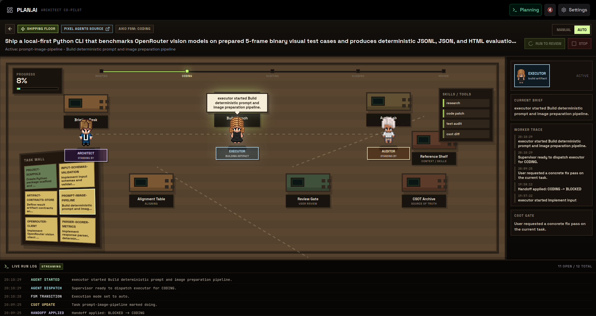
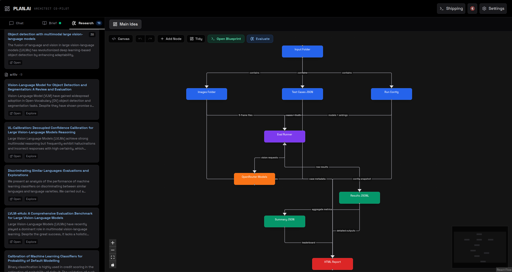
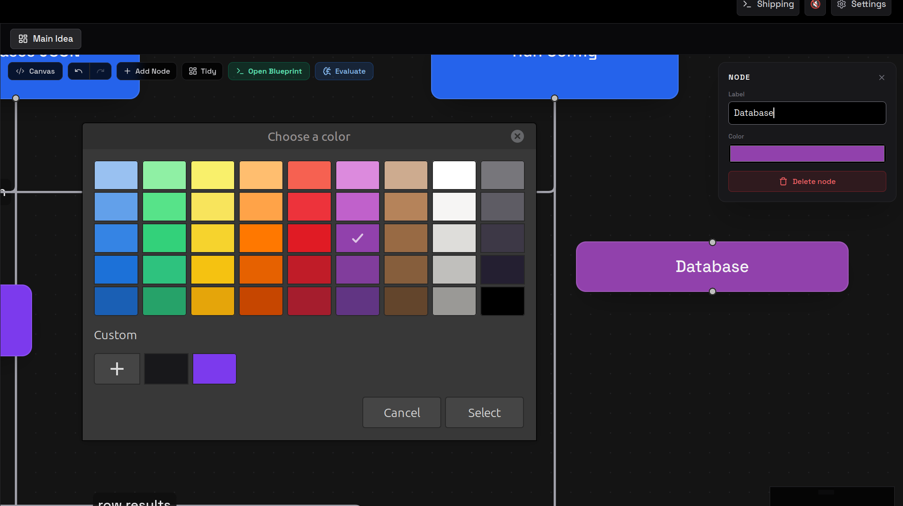

Welcome.

PLAN.AI takes a one-line idea and returns a citation-grounded technical blueprint in 22 sections, a Mermaid C4 diagram, and a Shipping Floor that compiles the blueprint into Architect / Executor / Auditor tasks. Underneath: nine source integrations, a three-depth research engine including a STORM-lite multi-persona orchestrator, and a Vercel-ready deploy where every API key is supplied client-side.



Code, papers, threads, encyclopedias, and the open web — each surface is a separate integration with its own rate-limit, ranking, and citation format. The synthesizer treats them as typed evidence and inlines source anchors directly in the blueprint prose.
Repo search, README extraction, language stats. Pulls real-world reference implementations into the synthesis.
Pre-print search by topic with abstract pull-through. Used as the primary academic substrate for novel methods.
Citation graph + venue metadata. Disambiguates and ranks methods by influence.
Community signal — what practitioners actually deploy and where the sharp edges are.
High-precision technical answers. Tag-filtered, score-weighted.
Disambiguation + canonical-definition substrate. Anchors specialist terms before the synthesizer expands them.
Fresh discourse on tooling, deployment, and infra trade-offs at the engineering tier.
Search-grade web retrieval with answer extraction. The general-web fallback when the specialist sources go quiet.
Structured page-to-markdown extraction for arbitrary URLs. Used when the user pastes a link directly into a workspace.
Three depths, three different cost / quality trade-offs. Quick is cheap and fast for spike research. Standard is the everyday one-call pipeline. Deep wakes up a STORM-lite orchestrator that recruits three personas and runs them in parallel against the source surfaces.
Single LLM pass against a curated 2-source mix. Useful for "what is X, who works on it, where do I read more" briefs.
Plan → fan-out → synthesize. The agent first decomposes the topic into 4 — 6 questions, fans out to all 9 sources, then synthesizes a 22-section blueprint with cited prose.
A multi-persona orchestrator (Engineer / PM / SRE) generates 6 — 9 parallel fan-out queries with role-specific framings, then a synthesizer reconciles the three perspectives into a single cited blueprint.
Asks how it's actually built. Pulls implementations, dependency graphs, perf trade-offs, gotchas.
Asks who pays for it. Pulls competitive landscape, user pain, pricing signals, adoption traction.
Asks what breaks at 3 AM. Pulls deployment topology, observability requirements, failure modes, capacity planning.
Every successful run produces a single artefact: a 22-section technical blueprint. Sections cover problem framing, related work, system architecture, data layer, model layer, deployment, observability, threat model, roll-out plan, and explicit risks. Every claim is anchored by an inline citation back to a source surface.
The blueprint embeds a Mermaid C4 system diagram with components, containers, and data-flow arrows. Renders client-side; users can fork-and-edit in place.
Every concrete claim points back to a numbered source from the run's evidence pool. No floating assertions; clicking a citation opens the underlying source in a side-pane.
Right-click any reference to spawn a sibling workspace explored independently, then fold its findings back into the parent blueprint with a merge action.
Workspace topology is rendered as a React-Flow graph with dagre auto-layout. The whole research session is itself a navigable, persistable structure.
Optional voice-over of any section via ElevenLabs. Useful for solo review on a walk; the blueprint reads itself back to you, citations included.
All workspaces and the current blueprint persist locally — no auth required, no server-side user data, no PII leaving the browser.
These are unedited outputs from a real PLAN.AI run on 12–13 May 2026 — the topic was a 24-hour security-loop hackathon idea (CCTV → YOLO tracking → simulated PTZ → OpenAI Vision verification → audit trail). The diagram on the left is the live render of the system architecture; the document on the right is the full 22-section blueprint, served as a side artefact instead of being inlined into this page.
Recorded 13 May 2026 · 02:27. A live walkthrough of the rendered diagram and the planner UI — the same architecture that maps to the Architect / Executor / Auditor lanes in the Shipping Floor below.
STORM-lite depth, three personas, inline citations, embedded Mermaid C4. The unedited PLAN.AI output — not a hand-curated demo. Preview the full rendered document in-browser with diagrams, or download the raw markdown.
A blueprint is only useful if it ships. The Shipping Floor compiles every successful run into a three-lane task list — Architect, Executor, Auditor — directly executable by an upstream agentic runner. The same Architect / Executor / Auditor pattern Aiko's factory implements, here exposed as a planning artefact rather than a runtime.
Tasks that define and ratify scope: spec writing, interface contracts, decision records, Mermaid diagrams. The blueprint pre-populates this lane from sections 1 — 8.
Tasks that produce code: scaffold, implement, integrate, write fixtures. Pre-populated from sections 9 — 16 of the blueprint.
Tasks that gate-keep delivery: tests, lint, security scan, deployment validation, observability check. Pre-populated from sections 17 — 22.
The whole stack ships to Vercel as a static React build with a single serverless catch-all handler. No backend DB, no auth, no embedded API keys — every key the user wants to use is entered client-side and persisted only in localStorage. Public demos can be cloned and run with the cloner's own keys.
Twelve minutes from one-line idea to a downloadable 22-section blueprint with rendered Mermaid C4. No cuts, no edits — the same path the Shipping Floor consumes upstream.
Recorded 14 May 2026 — unedited end-to-end run: idea → research → blueprint → diagram → shipping floor.
Welcome.